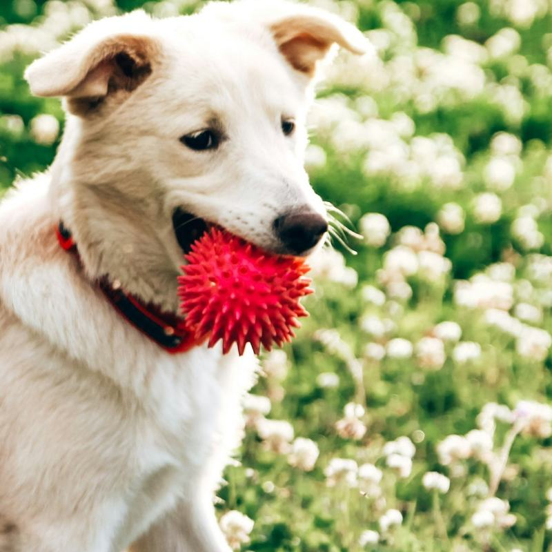
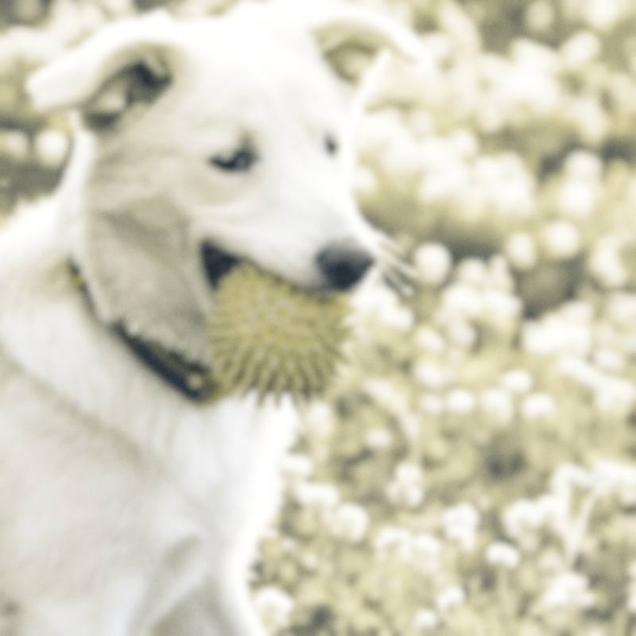
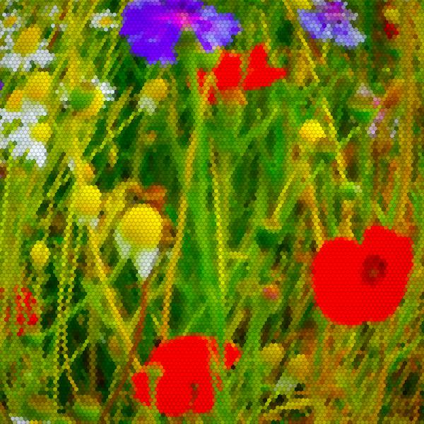

Una app de cámara en directo para iPhone, sin cuenta. Perro, Gato, Abeja y 12 ojos humanos son gratis; sus fotos llevan una marca.
Zoolens convierte la cámara de tu iPhone en los ojos de un perro, de una abeja o de un camarón mantis, en directo. Arrastra la línea de la imagen para comparar.

Tus ojosPerro Gratis
Esto es un ejemplo. Prueba con tu foto o tu cámara: no sale de este navegador.
Para ver tu cámara como podría verla un perro, el navegador te pedirá la cámara. La imagen se queda en esta pestaña. No se graba ni se envía nada.
Perro · El rojo y el verde se parecen; los azules y amarillos se mantienen.
Próximamente en el App Store, para iPhone. Muy pronto podrás apuntarte para recibir un aviso.
Perro, Gato, Abeja y 12 ojos humanos son gratis. Otros 35 animales vienen en packs. Las fotos y vídeos gratis llevan una marca, y cada día tienes gratis una foto premium o un vídeo de 10 segundos. Qué es gratis y qué es de pago
La misma foto, otros ojos
Baja: solo cambia la mitad del animal.

Tus ojosGato Gratis
Tus ojosGato Gratis
Gato · Gratis
Ojos de gato: menos detalle, colores más apagados
Los gatos también confunden el rojo y el verde, y el detalle fino lo ven más suave que nosotros. En la app, las sombras se abren en una vista nocturna gris azulada con un grano fino.
La foto del cachorro: tus ojos a la izquierda; a la derecha, el efecto Gato, más suave y con colores más apagados.
Tus ojosAbeja Gratis
Abeja · Gratis
Ojos de abeja: flores en colores falsos
Las abejas ven el ultravioleta, y la cámara de un móvil no. Zoolens lo adivina a partir del color normal y muestra una vista en colores falsos, a través de un panal de facetas: los verdes se vuelven rojizos y el rojo casi desaparece.
Los colores son una convención, no lo que siente una abeja. El desenfoque está exagerado para que se note en pantalla.
Flores de prado: tus ojos a la izquierda; a la derecha, el efecto Abeja, un panal borroso en colores falsos.
Tus ojosCamarón mantis Premium
Camarón mantis · Premium
Ojos de camarón mantis: el color en bandas intensas
Tiene 12 tipos de receptores de color, pero distingue colores parecidos peor que nosotros: puede que reconozca los colores en vez de compararlos. La app ajusta los colores a bandas planas e intensas. La luz polarizada y el ultravioleta lejano no se pueden mostrar.
Premium: en el pack Mar, o gratis una vez al día como tu foto premium o tu vídeo de 10 segundos.
Flores de prado: tus ojos a la izquierda; a la derecha, el efecto Camarón mantis, colores en bandas planas e intensas.
Tus ojosSin rojo Gratis
Sin rojo · Gratis
12 ojos humanos, gratis
Así podría ver estas flores alguien sin rojo: las amapolas se oscurecen y se confunden con el verde. La app tiene doce de estas vistas.
Son simulaciones, no pruebas ni diagnósticos. Si te preocupa tu vista, consulta a un óptico o a un oftalmólogo.
Flores de prado: tus ojos a la izquierda; a la derecha, como podría verlas alguien sin rojo, con las amapolas oscuras y cerca del verde.
En directo, en tu cámara
Apunta con tu iPhone a lo que quieras y la imagen cambia en directo. Desliza para cambiar de ojos. Haz fotos y vídeos con el efecto; se guardan en tus Fotos.
La app funciona con la cámara en directo; no edita fotos de tu fototeca. La demo de arriba te deja probar la idea con una foto.
35 animales más, en 7 packs
Los animales premium vienen en packs de cinco, o todos juntos con un plan. Son imágenes fijas hechas con los efectos de la app; en la app van en directo.
Tus ojosCamarón mantis Premium
Camarón mantis · Pack Mar. Sus 12 canales de color son reales; esta imagen es una idea de ellos, no lo que ve.

Premium
Mariposa · Pack Bichos. Color muy vivo a través de miles de facetas diminutas. Los dibujos ultravioleta de los pétalos se adivinan a partir del color normal.
El ultravioleta, el calor y los campos eléctricos se adivinan a partir del color normal: la cámara de un móvil no puede verlos.
Aprende mientras miras
Toca (i) en cualquier animal para leer una nota corta sobre cómo ve, y sobre lo que la imagen no puede mostrar.
Con ojos de perro, el rojo y el verde se parecen.
Los colores son aproximados: una simulación, no una medición.
La marca de las fotos gratis
Las fotos y vídeos gratis llevan una marca: el nombre de la vista arriba a la izquierda, como «Visión de perro · Zoolens · mira como un animal», y un pequeño «Zoolens» abajo a la derecha.
La marca no es diminuta: su título mide más o menos una veinteava parte del ancho de la foto, para que se lea qué vista es.
Un pack la quita para sus cinco animales. Cualquier plan la quita en todos. En la app, el botón dice «Quitar la marca con Premium».
Gratis y de pago
Precios previstos en euros, IVA incluido. El App Store muestra el precio final de tu país antes de pagar.
Gratis
Perro, Gato, Abejay 12 ojos humanos, con la marca
1 al díafoto premium o vídeo de 10 segundos, con la marca
Pago único
3,99 € por pack5 animales, para siempre, sin la marca
29,99 € De por vidatodos los animales, también los futuros. Sin suscripción ni renovaciones.
O suscripción
19,99 € al año7 días gratis, luego anual. Todos los animales, sin marca.
4,99 € a la semana3 días gratis, luego semanal. Todos los animales, sin marca.
Las suscripciones se renuevan hasta que las canceles en Ajustes > tu nombre > Suscripciones. Para evitar un cobro, cancela al menos 24 horas antes de que acabe la prueba o el periodo en curso.
Antes de empezar una prueba, la app muestra la fecha del primer cobro.
Los planes nunca se abren solos: solo cuando tocas algo que los pide, como un animal bloqueado o «Quitar la marca con Premium».
Y la pantalla de planes siempre ofrece «Seguir gratis con Humano, Perro, Gato y Abeja».
¿Ya compraste algo? «Restaurar compras» lo recupera en un iPhone nuevo.
Para familias
Sin anuncios.
Sin cuenta y sin registro en la app.
Si la cuenta de Apple de tu hijo usa «Solicitar la compra», la compra espera a que la apruebes.
La visión de bebé y las vistas de daltonismo son simulaciones, no pruebas de la vista.
Solo iPhone
Para iPhone, con iOS 17 o posterior. No hay versión para Android. La demo de esta página funciona en cualquier móvil u ordenador.
Tu privacidad
Las fotos y vídeos se quedan en tu móvil, salvo que los compartas.
Sin anuncios, sin seguimiento y sin cuenta en la app.
El micrófono solo sirve para el sonido de tus vídeos. La app lo pide la primera vez que grabas; si dices que no, los vídeos salen sin sonido.
Esta web no usa cookies ni analítica. La demo funciona dentro de esta pestaña del navegador y nunca sube tu imagen.
Próximamente en el App Store, para iPhone. Muy pronto podrás apuntarte para recibir un aviso.
Perro, Gato, Abeja y 12 ojos humanos son gratis. Otros 35 animales vienen en packs. Las fotos y vídeos gratis llevan una marca, y cada día tienes gratis una foto premium o un vídeo de 10 segundos. Qué es gratis y qué es de pago